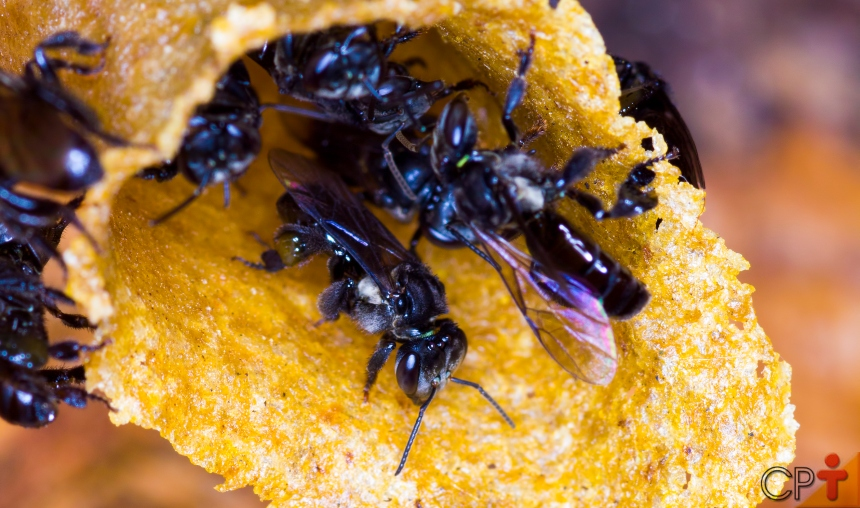

A Importância das Abelhas
O objetivo do site dedicado à preservação das abelhas é promover a conscientização sobre a importância vital desses polinizadores para o ecossistema global. A plataforma visa educar o público sobre os desafios enfrentados pelas abelhas, como o declínio das populações devido a doenças, pesticidas e perda de habitat. Além disso, o site busca fornecer recursos práticos e científicos para incentivar ações concretas, como o apoio a práticas agrícolas sustentáveis, a criação de habitats favoráveis às abelhas e o engajamento em iniciativas de conservação. Ao capacitar indivíduos e comunidades com conhecimento e ferramentas, o site visa catalisar esforços coletivos para proteger as abelhas e promover um ambiente mais saudável e equilibrado para todos os seres vivos.